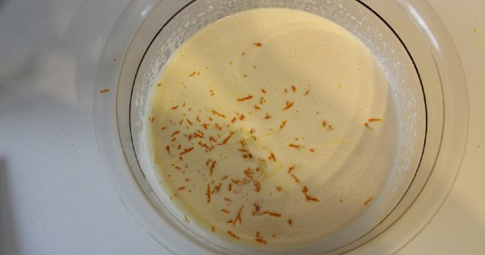
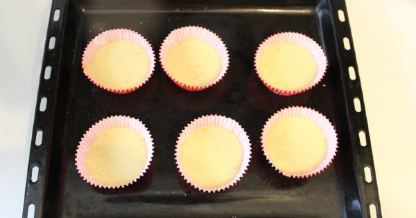

Hafif ve Yumuşacık: Portakallı Muffin Tarifi
anasayfa
tarif gönder
iletişim

Portakallı Muffin Tarifi İçin Malzemeler
2 yemek kaşığı eritilmiş tereyağı
1/2 su bardağı taze sıkılmış portakal
suyu
2,5 su bardağı un
Portakallı Muffin Tarifi Nasıl Yapılır?
'Aşama 1': Yumurtaları derin bir
karıştırma kabına alın. Toz şeker ilave ettiğiniz muffin
harcını"krema halini" alana kadar karıştırın.

'Aşama 2': Süt, sıvı yağ, eritilmiş tereyağı, taze sıkılmış portakal suyu ve rendelenmiş
portakal kabuğunun yarısını kattığınız muffin harcını mikser yardımıyla karıştırın.

'Aşama 3': Elenmiş un ve kabartma tozu kattığınız muffin karışımını "tahta bir kaşık"
yardımıyla karıştırın.
'Aşama 4': Porsiyonluk muffin kalıplarına hazırladığınız portakallı muffin harcını, kalıpların
üzerlerinde bir parmak kalınlığında boşluk kalacak şekilde paylaştırın.

'Aşama 5': 180 derece fırında kabarıp, üzerleri çatlayana kadar yaklaşık 20 dakika pişirin.
Fırından çıkardığınız muffinleri, "oda ısısında" kendi kalıplarında dinlendirin. Hoş bir aroma
ve ıslaklık katması için muffinlerin üzerine arzuya göre portakal reçeli sürdükten sonra servis edin.
©her hakkı saklıdır®